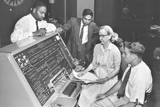

Conhecida como “a incrível Grace Hopper”, “Rainha da Computação” , “Rainha da Codificação”, “vovó do COBOL” e “Grande Dama do Software”.
Grace Hopper nasceu em Nova Iorque em 1906 e era a mais velha de três irmãos. Sendo uma criança inteligente e curiosa, estimulada pelos pais a estudar com as mesmas oportunidades de seus irmãos homens, aos sete anos desvendou o funcionamento de um despertador. A partir daí, seu interesse pelas ciências exatas só cresceu, até que a futura analista de sistemas se graduou em Matemática e Física em 1928, concluindo seu mestrado na Universidade de Yale em 1930. Alguns anos depois, com o Ph.D em Matemática conquistado, Hopper teve sua dissertação.
“Novos Critérios de Irredutibilidade” publicada e então começou a ensinar Matemática em instituições especializadas.
Na década de 1940, Hopper foi uma das mulheres voluntárias para o WAVES (Women Accepted for Volunteer Emergency Service), uma divisão da Reserva Naval dos Estados Unidos que era constituída exclusivamente por mulheres. Nesse projeto, ela foi designada para trabalhar como tenente júnior em um projeto computacional, em que pôde analisar e escrever artigos sobre o computador Mark I – também conhecido como “Calculadora Automática Controlada por Sequência”. Nessa época Hopper pediu para ser transferida para a Marinha regular, mas seu pedido foi recusado e ela continuou servindo na Reserva da Marinha, permanecendo no Laboratório de Computação de Harvard até 1949.
Após sair do laboratório de Harvard, Hopper tornou-se funcionária da Eckert-Mauchly Computer como matemática sênior, sendo integrante da equipe de desenvolvimento do UNIVAC I (“Universal Automatic Computer”, ou “Computador Automático Universal”). Esse foi o primeiro computador comercial fabricado e comercializado nos Estados Unidos.

Grace Hopper trabalhando no UNIVAC (Reprodução: Divulgação)
Custando mais de um milhão de dólares, foram fabricados e vendidas 46 unidades do UNIVAC I para empresas de grande porte como a General Electric, por exemplo, e algumas delas permaneceram em funcionamento por muitos anos – uma unidade do UNIVAC I foi utilizada até 1970 por uma companhia de seguros. No Brasil, o UNIVAC foi um dos primeiros computadores a chegarem por aqui, sendo adquirido pelo IBGE em 1961 por quase 3 milhões de dólares para processar dados do censo.
Depois do sucesso do UNIVAC I, Grace Hopper desenvolveu seu próprio compilador – um programa de computador que cria outros programas a partir de um código-fonte escrito em uma linguagem compilada. Na prática, ele traduz um programa de uma linguagem textual para uma linguagem de máquina, e em 1952 a analista de sistemas tinha seu próprio compilador rodando em uma época em que a crença geral era a de que computadores eram capazes apenas de fazer aritmética.
Em 1954, Grace Hopper foi nomeada a primeira diretora de programação automática da companhia onde trabalhava, e seu departamento foi responsável por divulgar algumas das primeiras linguagens de programação baseadas em compiladores. Em 1973, Hopper foi nomeada capitã da Marinha norteamericana e aposentou-se em 1986 como contra-almirante.
Entre os inúmeros prêmios que recebeu, estão mais de 40 doutorados honoris causa, a medalha de Serviço Distinto da Defesa e a Medalha Nacional de Tecnologia. Ela ainda foi homenageada ao ver um destróier da Marinha sendo batizado com seu nome. Além disso, também recebeu a primeira edição do prêmio “Homem do Ano” da Ciência da Computação conferido pela Associação de Gerenciamento de Processamento de Dados, tornando-se a primeira mulher (e primeiro cidadão americano) a ser nomeada Distinguished Fellow pela British Computer Society.
Grace Hopper faleceu em janeiro de 1992 aos 85 anos de idade. Por ser uma mulher cuja relevância em seu setor é inegável, desde 1994 é realizado em sua honra o congresso Grace Hopper Celebration of Women in Computing, que anualmente celebra os feitos das mulheres no mundo da computação.